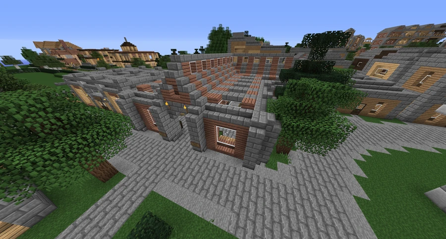
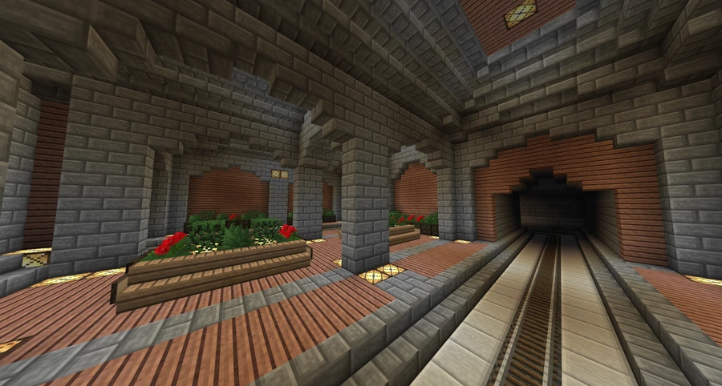

Broville Heights Station
A rail transit stop serving the Broville Heights area.
The neighborhood station
Broville Heights Station is a subway station in the suburban community of Broville Heights, near Broville. It stands in the heart of the neighborhood, directly across the street from Broville Heights Outdoor Mall.
Its position serves both residents making their daily commute into the city and visitors traveling out of the urban area to shop at nearby stores.



Construction and facilities
The station was built by FoxCreek Properties in mid-2012. Like University Station, it combines an underground passenger area with a small kiosk and an aboveground shopping area.



See also
Sources and references
- v11.4.4 maps, signs, books and items World records
- Broville Heights Station · Broville Wiki Community archive
Text adapted and expanded from Broville Heights Station (contributors and history, revision 5082). Adapted text is available under CC BY-SA 3.0.